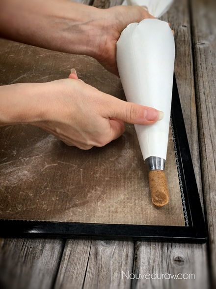
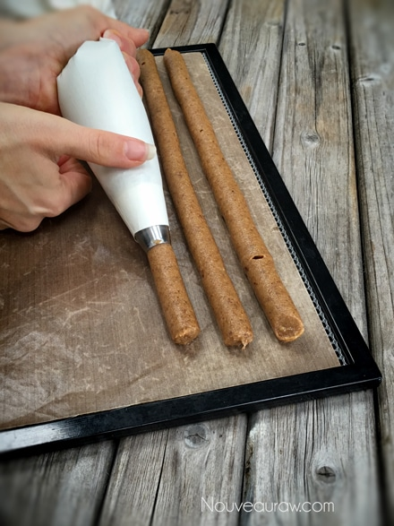
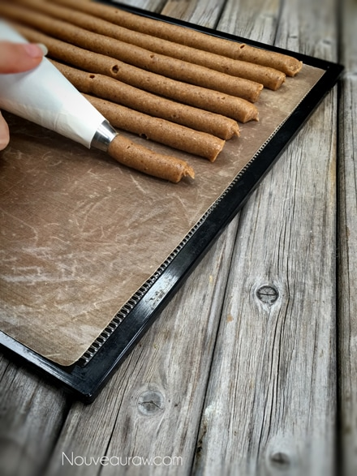

Salted Honey Nougat Candy Bars
Salted Honey Nougat Candy Bars
~ raw, gluten-free ~
Raw honey is far more than a natural sweetener, it’s a “functional food”, which means it is a natural food with health benefits. It contains natural antioxidants, enzymes, and minerals including iron, zinc, potassium, calcium, phosphorous, magnesium, and selenium. Vitamins found in honey include vitamin B6, thiamin, riboflavin, pantothenic acid, and niacin. (1)
One last important thing that I wanted to point out is using raw honey. It has a completely different texture, not to mention health benefits than the golden-amber, liquidy store-bought stuff. Raw honey is super thick, sticky, but ooooh so yummy and much better for you. So don’t skimp on this ingredient.
The liquid honey bear in the photo is not what I used… he just photobombed my picture. hehe
When putting this recipe together I used a fine almond flour. You could also grind down whole almonds that have been soaked and dehydrated… though this version won’t create as fine as a texture. Lastly, if use store-bought almond flour, you could use that as well. So you have some options.
For the almond flour, I used a fine almond flour, not ground almonds. One way to achieve a fine almond flour is too dry the almond pulp after making almond milk. Grind this to a fine powder once dried. I am kind of repeating myself from other sweet like candies, but it’s important that I share in detail about some of the ingredients that I used. :)
It’s time to get up off the couch, from under that snuggly warm blanket and get busy in the kitchen… race ya! hehe Enjoy and please keep in touch down below in the comment section. Blessings, amie sue
Yields roughly 60 (2” candy bars)
Preparation:
Batter:
- Remove the pits from the dates as you put them in the measuring cup.
- Be sure to inspect each date as you tear it in half to remove the pit. Mold and insect eggs can infect dried dates. I don’t mean to gross you out, you just need to be made aware of this.
- Place the date paste, honey, almond flour ground flax, and salt in the food processor fitted with the “S” blade. Process until it turns into a creamy paste.
Fill the piping bag:
- It is best to use either a canvas or a silicone piping bag. I used the piping tip Ateco #808.
- While holding the bag with one hand, fold down the top with the other hand to form a cuff over your hand.
- Fill the bag 1/2 full. If you overfill the bag, the excess batter may squeeze out the wrong end not to mention that you will have less control of the bag when piping.
- Close the bag by unfolding the cuff and twisting the bag closed. This forces the batter down into the bag.
- “Burping” the bag: Make sure you release any air trapped in the bag by squeezing some of the batter out of the tip into the bowl. This is called “burping” the bag.
- If you don’t remove the air bubbles they will come out while you are piping your straight line and cause blurps and breaks. Best to create a seamless line.
Piping:
- Click (here) to view some photos of how I piped these.
- Hold the piping bag tip about 1/4″ above the non-stick sheet, at a 22.5-degree angle, and slowly pipe the batter from one edge of the dehydrator tray to the other.
- Keep constant pressure on the piping bag as you squeeze out the paste. This will ensure an even thickness of the line.
- After each completed line, stop and re-twist the piping bag, working all paste towards the tip. This will eliminate air bubbles in the bag and give you a solid grip.
- To create the bar effect, I piped 3 rows touching each other.
- Remember: It doesn’t have to be perfect. Just have fun and if you make a mistake, scoop it up, place back in the bag and do it again.
Dehydrate & store:
- Place the tray in the dehydrator and dry at 145 degrees (F) for 1 hour, then reduce to 115 degrees (F) for 16-24 hours.
- Once cooled, cut into 2” lengths and dip in the hardening chocolate.
- Sprinkle coarse sea salt on top.
- Make sure that they are completely dry before wrapping them. They will turn from a glossy to a matte look once dry.
- Wrap in squares of wax paper or candy foils.
- I keep mine stored in the fridge for freshness but they can be left out at room temp.
Culinary Explanations:
- Why do I start the dehydrator at 145 degrees (F)? Click (here) to learn the reason behind this.
- When working with fresh ingredients it is important to taste test as you build a recipe. Learn why (here).

I wanted to show you a few different angles in how to hold the piping bag when creating the candies. My left hand is controlling the pressure and speed of which I am releasing the batter. The right hand, basically just my thumb is being used as a guide.

Remember to re-twist the bag after completing a row.

This angle shows you that I am piping the batter at a 22-degree angle. Just remember to use a steady and even pace when piping.
© AmieSue.com